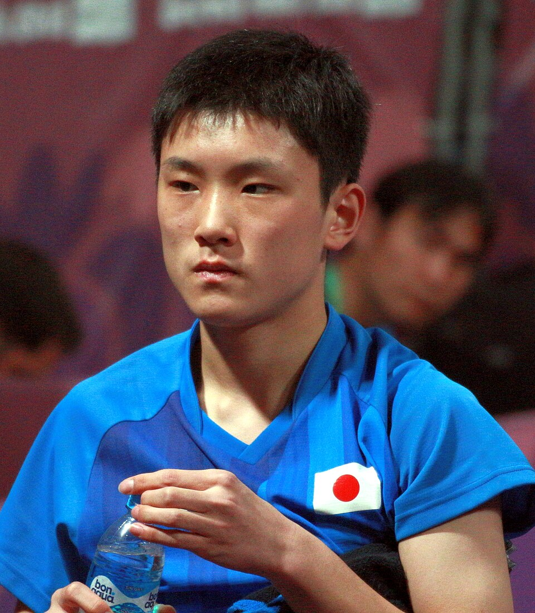

ラケット競技
•
卓球 / 男子シングルス / 男子団体 / 混合ダブルス
はりもと ともかず
張本 智和
Tomokazu Harimoto
🏢 所属: 智和企画
🏅 世界卓球メダリスト🏅 パリ五輪男子団体4位🏅 全日本選手権複数回優勝
熱き雄叫び『チョレイ！』とともに世界を震撼させる超速バックハンド。アジアの強豪を迎え撃つ日本卓球のエース
愛知・名古屋2026 今大会最終結果
銅メダル 🥉
3位決定戦: 4-1 勝利
準決勝で惜敗するも、気持ちを切り替えて臨んだ3位決定戦で闘志全開。鋭いバックハンドチキータで主導権を握り堂々の銅メダルを獲得。
🎬 最後のシーン（決定的瞬間・ハイライト）
相手のサーブを台上で鋭く捉えてフォアサイドへ突き刺し、満面の笑顔で拳を振り上げたシーン。
▶️ 【YouTube】魂の「チョレイ！」炸裂！勝利を決定づけた超高速バックハンド を見る
📊 公式トーナメント表・競技記録速報（Draw/Results）
男子シングルス 決勝トーナメント表＆3位決定戦スコア
📊 【WTT (World Table Tennis) / 日本卓球協会】WTT公式 トーナメント表 (Draw) を見る ➔
経歴・これまでの歩み
元中国代表選手の父母のもと2歳でラケットを握る。小学生時代から全日本選手権ジュニアの部で年上選手を次々撃破。世界ジュニアを史上最年少の13歳で制覇。ワールドツアーでも馬龍や樊振東といった中国トップを破り、日本卓球男子を世界トップへ押し上げた。
主要大会ハイライト戦績
2024年
パリオリンピック
男子シングルス ベスト8 / 男子団体 4位
2024年
全日本選手権
男子シングルス 優勝
2022年
世界卓球成都大会
男子団体 銅メダル（中国戦で2点取り）
プレイスタイル＆世界を制する武器
台に張り付いてピッチの速さで相手を圧倒する前陣速攻スタイル。チキータからのチキータ返し、強烈なバックハンドドライブ、フォアハンドのカウンターが一級品。
専門家・メディアによる客観的分析・批評
✨
強み・世界トップ水準の評価
中国トップ選手を真正面から打ち破る世界最強クラスの前陣速攻バックハンドと、気迫あふれる雄叫びでチームを牽引するリーダーシップ。
出典・ソース:
卓球王国 / 中国代表コーチ陣（劉国梁評）
⚠️
課題・懸念される客観的事実
大量リードした終盤での心理的プレッシャーによる逆転負け（パリ五輪団体戦など）や、フォアハンドの絶対的な破壊力においてトップ中国勢との差が指摘されます。
出典・ソース:
卓球レポート / 元日本代表解説陣
愛知・名古屋2026への決意とメッセージ
大会スケジュール＆観戦のツボ
🗓️ 出場予定日程・会場
2026年9月25日〜10月2日（豊田スカイホール）
👀 観戦の注目ポイント
目にも止まらぬ超高速ラリーの応酬と、ポイントを取った瞬間の気迫あふれる雄叫び。